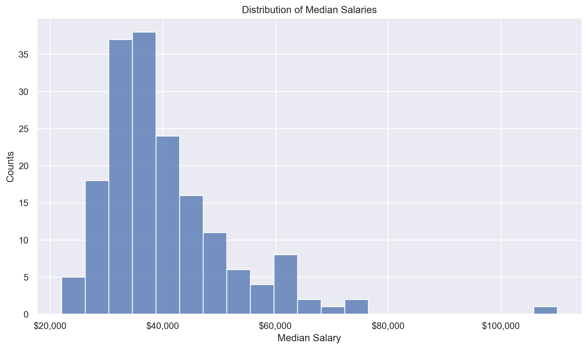
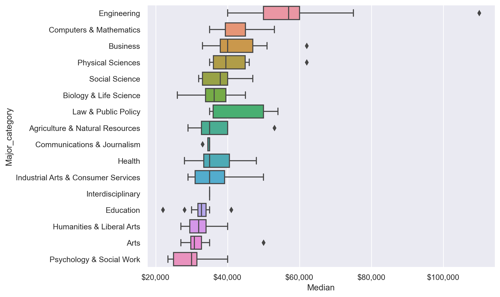
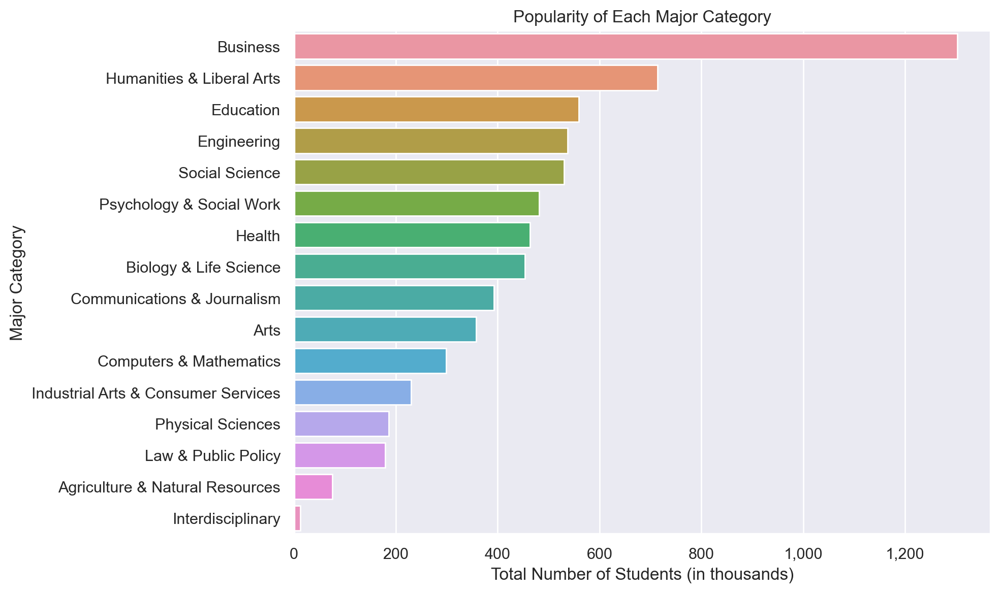
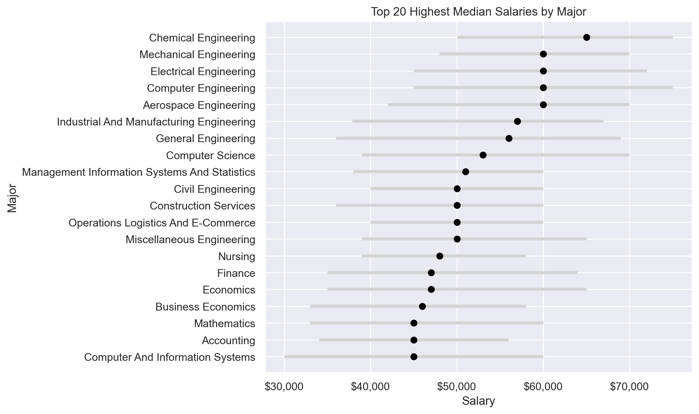
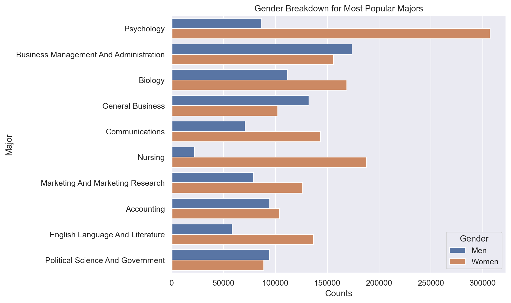

import datetime
import hashlib
import json
import os
import re
import sys
import time
import warnings
import ipywidgets as widgets
import matplotlib as mpl
import matplotlib.pyplot as plt
import numpy as np
import pandas as pd
import requests
import seaborn as sns
from IPython.display import Markdown, display
from matplotlib.ticker import FuncFormatter
from pandas.plotting import register_matplotlib_converters
from scipy.stats import norm
from ydata_profiling import ProfileReport
register_matplotlib_converters()
sns.set()
sns.set_context("notebook")
plt.rcParams["figure.figsize"] = 10, 6
pd.options.display.max_columns = None
pd.options.display.max_rows = None
pd.options.display.precision = 4
warnings.simplefilter(action="ignore", category=FutureWarning)
dollar_formatter = FuncFormatter(lambda x, pos: f"${x:,.0f}")
thousands_formatter = FuncFormatter(lambda x, pos: f"{x:,.0f}")Second pass
Second pass at looking at this dataset.
Imports
Functions
def raw_to_clean(raw):
return raw.assign(Major=lambda x: x.Major.str.title())
def plot_median_histogram(df, bins=20):
fig, ax = plt.subplots(figsize=(10, 6))
fig.patch.set_facecolor("w")
sns.histplot(df["Median"], ax=ax)
ax.xaxis.set_major_formatter(dollar_formatter)
ax.set_xlabel("Median Salary")
ax.set_ylabel("Counts")
ax.set_title("Distribution of Median Salaries")
fig.tight_layout()
def plot_median_salary_boxplot(df):
order = (
df.groupby("Major_category")["Median"]
.median()
.sort_values(ascending=False)
.index
)
fig, ax = plt.subplots(figsize=(10, 6))
fig.patch.set_facecolor("w")
sns.boxplot(x="Median", y="Major_category", data=df, ax=ax, order=order)
ax.xaxis.set_major_formatter(dollar_formatter)
fig.tight_layout()
def plot_top_n_salaries(df, n, sample_size_threshold):
filtered_df = df[df["Sample_size"] >= sample_size_threshold]
top_n = filtered_df.nlargest(n, "Median").sort_values("Median", ascending=True)
fig, ax = plt.subplots(figsize=(10, 6))
fig.patch.set_facecolor("w")
ax.errorbar(
top_n["Median"],
top_n["Major"],
xerr=[top_n["Median"] - top_n["P25th"], top_n["P75th"] - top_n["Median"]],
fmt="o",
color="black",
ecolor="lightgray",
elinewidth=3,
capsize=0,
)
ax.set_xlabel("Salary")
ax.set_ylabel("Major")
ax.xaxis.set_major_formatter(dollar_formatter)
ax.set_title("Top " + str(n) + " Highest Median Salaries by Major")
fig.tight_layout()
def plot_major_popularity(df):
fig, ax = plt.subplots(figsize=(10, 6))
fig.patch.set_facecolor("w")
major_popularity = df.groupby("Major_category")["Total"].sum().reset_index()
major_popularity["Total"] = major_popularity["Total"] / 1000 # Scaling down by 1000
major_popularity = major_popularity.sort_values(by="Total", ascending=False)
sns.barplot(x="Total", y="Major_category", data=major_popularity, ax=ax)
ax.set_title("Popularity of Each Major Category")
ax.set_xlabel("Total Number of Students (in thousands)")
ax.set_ylabel("Major Category")
ax.xaxis.set_major_formatter(thousands_formatter)
fig.tight_layout()
def plot_gender_breakdown(df):
fig, ax = plt.subplots(figsize=(10, 6))
fig.patch.set_facecolor("w")
top_majors = df.nlargest(10, 'Total')['Major']
df_top_majors = df[df['Major'].isin(top_majors)].sort_values("Total", ascending=False)
sns.barplot(x='Count', y='Major', hue='Gender', data=df_top_majors.melt(id_vars=['Major', 'Total'], value_vars=['Men', 'Women'], var_name='Gender', value_name='Count'), ax=ax)
ax.set_xlabel("Counts")
ax.set_ylabel("Major")
ax.set_title("Gender Breakdown for Most Popular Majors")
fig.tight_layout()Data
raw = pd.read_csv(
"https://raw.githubusercontent.com/rfordatascience/tidytuesday/master/data/2018/2018-10-16/recent-grads.csv"
)Cleaning
df = raw_to_clean(raw)df.head()| Rank | Major_code | Major | Total | Men | Women | Major_category | ShareWomen | Sample_size | Employed | Full_time | Part_time | Full_time_year_round | Unemployed | Unemployment_rate | Median | P25th | P75th | College_jobs | Non_college_jobs | Low_wage_jobs | |
|---|---|---|---|---|---|---|---|---|---|---|---|---|---|---|---|---|---|---|---|---|---|
| 0 | 1 | 2419 | Petroleum Engineering | 2339.0 | 2057.0 | 282.0 | Engineering | 0.1206 | 36 | 1976 | 1849 | 270 | 1207 | 37 | 0.0184 | 110000 | 95000 | 125000 | 1534 | 364 | 193 |
| 1 | 2 | 2416 | Mining And Mineral Engineering | 756.0 | 679.0 | 77.0 | Engineering | 0.1019 | 7 | 640 | 556 | 170 | 388 | 85 | 0.1172 | 75000 | 55000 | 90000 | 350 | 257 | 50 |
| 2 | 3 | 2415 | Metallurgical Engineering | 856.0 | 725.0 | 131.0 | Engineering | 0.1530 | 3 | 648 | 558 | 133 | 340 | 16 | 0.0241 | 73000 | 50000 | 105000 | 456 | 176 | 0 |
| 3 | 4 | 2417 | Naval Architecture And Marine Engineering | 1258.0 | 1123.0 | 135.0 | Engineering | 0.1073 | 16 | 758 | 1069 | 150 | 692 | 40 | 0.0501 | 70000 | 43000 | 80000 | 529 | 102 | 0 |
| 4 | 5 | 2405 | Chemical Engineering | 32260.0 | 21239.0 | 11021.0 | Engineering | 0.3416 | 289 | 25694 | 23170 | 5180 | 16697 | 1672 | 0.0611 | 65000 | 50000 | 75000 | 18314 | 4440 | 972 |
Plots
What is the distribution of median salaries across all majors?
plot_median_histogram(df, bins=25)
What is the distribution of salaries within each major category?
plot_median_salary_boxplot(df)
What is the popularity of each major category?
plot_major_popularity(df)
What are the top 20 majors by median salaries?
plot_top_n_salaries(df, 20, 100)
What is the gender breakdown for most popular majors?
plot_gender_breakdown(df)